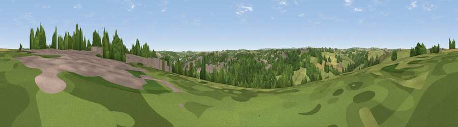

Viewpoint near Truro
#36228 in England · top 73% of its area beats it · near TruroThe view, rendered

A 360° render of this exact spot computed from the terrain model, tree cover and land cover — summer colours, afternoon light, calibrated against photographs of famous viewpoints. Real trees, hedges and buildings will differ in detail.
The panorama
Grey silhouette: terrain skyline in each direction (720 bearings, Earth curvature and refraction included). Dashed green: skyline with trees (+15 m) and buildings (+8 m) as obstacles. Blue strip: how far the ground is visible on each bearing.
Where the view opens
Wedge length = distance to the farthest visible ground on that bearing (vegetation-aware). Rings at 10, 25 and 50 km.
What fills the view
37% woodland · 35% grassland · 18% built-up · 10% cropland
Angular shares of the visible panorama (visual magnitude), not map area. Landscape diversity 0.56 (0–1 Shannon).
Key numbers
More beautiful places nearby
The staircase of upgrades: each row has a higher view potential than everything closer. Driving times are estimates from straight-line distance, calibrated against real road routing — check an actual route before setting out.
| Place | Direction | Drive | Score |
|---|---|---|---|
| Viewpoint near Shortlanesend | NW · 1 km | ~3 min | 41.1 |
| Viewpoint near Tresillian | E · 3 km | ~8 min | 44.1 |
| Viewpoint near Shortlanesend | NNW · 4 km | ~10 min | 46.4 |
| Porth Kea Hill | SSE · 4 km | ~10 min | 47.2 |
| Viewpoint near Tresillian | E · 5 km | ~10 min | 49.3 |
| Viewpoint near St. Michael Penkevil | ESE · 7 km | ~14 min | 50.0 |
| Viewpoint near Ruan Lanihorne | ESE · 8 km | ~16 min | 51.0 |
| Viewpoint near Zelah | NNE · 8 km | ~16 min | 66.5 |
50.27229, -5.06875 · source: screening · position refined by local search. Computed location — check access rights before visiting.